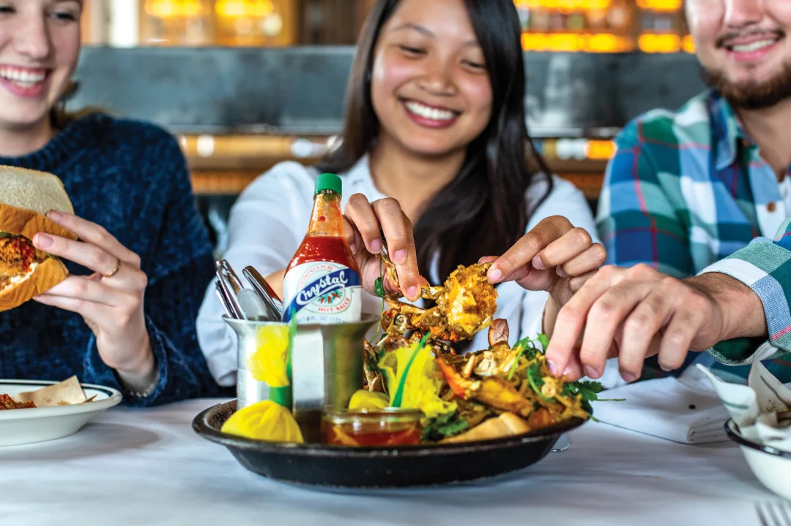
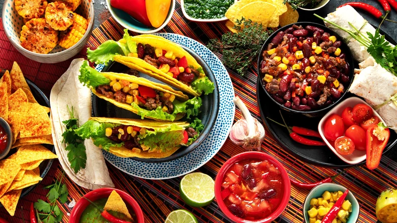
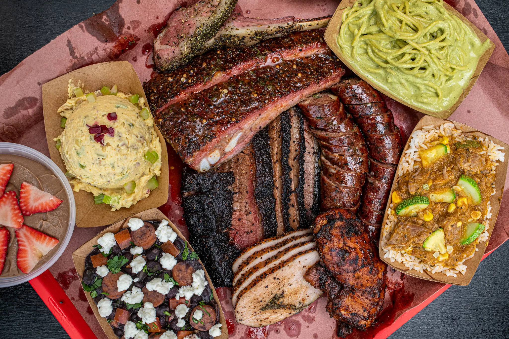
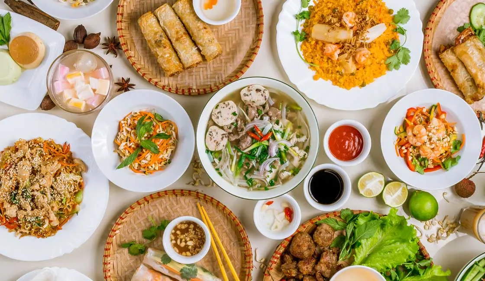

Where to eat. . .
Attractions, Food, and Southern Hospitality
Welcome to the food page of Houston, a city widely recognized as one of the best culinary destinations in America. Houston’s incredible diversity has helped create a food scene filled with bold flavors, rich traditions, and unforgettable dining experiences. Visitors from around the world come to Houston not only for its attractions, but also to enjoy meals that represent the cultures and history of the city. From sizzling Tex-Mex plates to slow-smoked barbecue and authentic Vietnamese dishes, Houston offers something delicious for every taste.

Photo Source: Visit Houston Texas
One of Houston’s most famous food categories is Tex-Mex, a flavorful blend of Mexican and Texas cooking traditions that has become a symbol of the region. Houston has embraced Tex-Mex for generations, making it a favorite choice for both locals and tourists. Popular dishes include fajitas, enchiladas, queso, tacos, and sizzling platters served with fresh tortillas. Because Houston has a strong connection to Texas culture and a large Hispanic community, Tex-Mex restaurants continue to thrive across the city. One of the most popular and highly recognized places to experience this cuisine is Ninfa's on Navigation, famous for helping popularize fajitas and for serving guests authentic Houston flavor for decades.

Photo Source: Tasting Table
Texas barbecue is another must-try experience when visiting Houston. Barbecue has deep roots in Texas history, where slow-cooking meat over wood smoke became a tradition passed through generations. In Houston, barbecue has grown into one of the city’s most loved food categories, attracting long lines of customers eager to enjoy tender brisket, ribs, sausage, and smoked turkey. The combination of rich flavor, patience, and craftsmanship has made Texas barbecue a source of pride throughout the state. One of Houston’s most popular destinations for barbecue is The Pit Room, known for expertly smoked meats and consistently praised by both locals and visitors.

Photo Source: New York Times
Houston is also nationally known for having one of the strongest Vietnamese food scenes in the United States. After many Vietnamese families settled in Houston in the late twentieth century, they helped build thriving communities and introduced authentic dishes that quickly became local favorites. Today, Vietnamese cuisine is considered one of Houston’s greatest food strengths, offering pho, banh mi, vermicelli bowls, spring rolls, and fresh coffee throughout the city. The quality and variety of Vietnamese food in Houston are often praised as among the best outside of Vietnam itself. One of the city’s most popular restaurants in this category is Pho Binh by Night, a beloved destination known for flavorful pho and its strong reputation among Houston diners.

Photo Source: Rainforest Cruises
Top 3 Barbecue Places
- Truth BBQ - Named Best BBQ in Houston by the Houston Chronicle Best of the Best readers’ poll. Known for elite brisket, ribs, and sides.
- Pinkerton's Barbecue - Frequently ranked among Houston’s top smokehouses, praised for brisket and signature pork ribs. Also highly rated by diners.
- The Pit Room - One of Houston’s most popular BBQ spots, known for Central Texas-style meats and tacos. Finalist in Chronicle rankings.
My Top Picks
- My pick if you're visiting Houston first time: Truth BBQ
- Best classic Texas vibe: Pinkerton's Barbecue
- Best with variety/menu options: The Pit Room